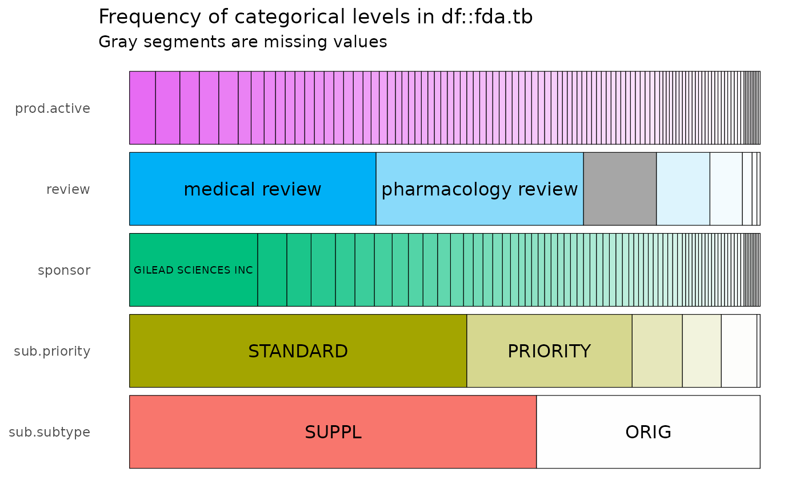
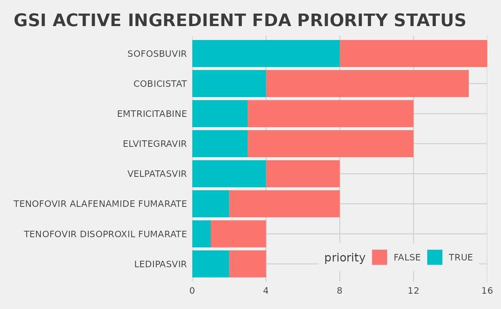

Sysrev provides a Drugs@FDA searchable stream for document reviews which politely ingests PDFs and metadata from labels.fda.gov.
The docs/metadata are indexed with a PDF parsing / OCR function to enable full text search and categorization. Sysrev also creates a versioning system for FDA documents by evaluating FDA application numbers and types.
In this vignette, you will learn to: Search Drugs@FDA –> Review drug labels –> Analyze the results.
Cardiotox@FDA sysrev
We are going to create a living review of FDA drug labels called Cardiotox@FDA.
create_sysrev("Cardiotox@FDA",get_if_exists=T)
if(interactive()){ browse_sysrev(pid=111474) }To create the FDA source go to sysrev.com/p/111474/add-articles. We’ll select new drug application NDA documents of document type Review with “cardiotoxicity” in the document text. Learn more about FDA applications types at FDA How Drugs Are Developed.
Creating a Drugs@FDA source
The search results in 112 articles, a manageable size for a vignette. ‘Import’ pushes the labels into the Cardiotox@FDA sysrev. We can inspect the data source, add notes, and set it to automatically add new articles that match our query by clicking “check new results”.

Clicking check for new results makes a living review
Now, anytime the FDA adds a new drug application review document with “cardiotoxicity” in the text it will be added to this review. Why might this be useful?
Analyze Meta
meta.tb = rsr::get_article_content(111474) |> # sysrev article content
mutate(path = glue('{here()}/tmp/pdf/{aid}.pdf')) |> # make local file names
mutate(metadata = map(metadata,jsonlite::parse_json)) |> # map FDA metadata to list
unnest_wider(metadata) |> # map FDA list to columns
select(aid,
fda.id = ApplNo,
sponsor = SponsorName,
review = ReviewDocumentType,
products = Products,
submission = Submissions,
url = contentUrl,
path)
prod.tb = meta.tb |> select(aid,products) |> # build aid -> products tbl
unnest_longer(products) |> unnest_wider(products) |> # list to columns
separate_rows(ActiveIngredient,sep="; ") |> # "name; name" -> 2 rows
select(aid, prod.active = ActiveIngredient)
sub.tb = meta.tb |> select(aid,submission) |> # build aid -> submission
unnest_longer(submission) |> unnest_wider(submission) |> # list to columns
select(aid,
sub.priority= ReviewPriority,
sub.subtype = SubmissionType)
fda.tb = meta.tb |> left_join(prod.tb,by="aid") |> left_join(sub.tb, by="aid") |>
select(aid, sponsor, review, sub.priority, sub.subtype, prod.active) |>
distinct()Meta categories
icat <- inspectdf::inspect_cat(fda.tb)
icat |> inspectdf::show_plot(label_color = "black")
fda.tb |> filter(sponsor=="GILEAD SCIENCES INC") |> # GET GSI docs
count(prod.active,priority=sub.priority=="PRIORITY") |> # get count by priority
ggplot(aes(x=reorder(prod.active,n),y=n,fill=priority)) + # make a plot
geom_col(position = "stack") + ...